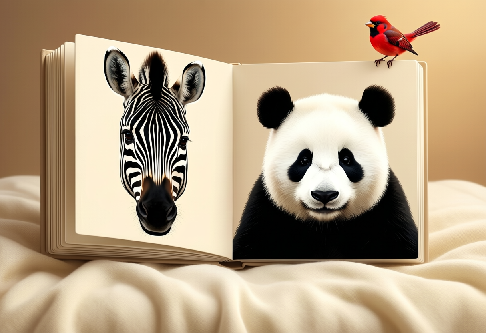
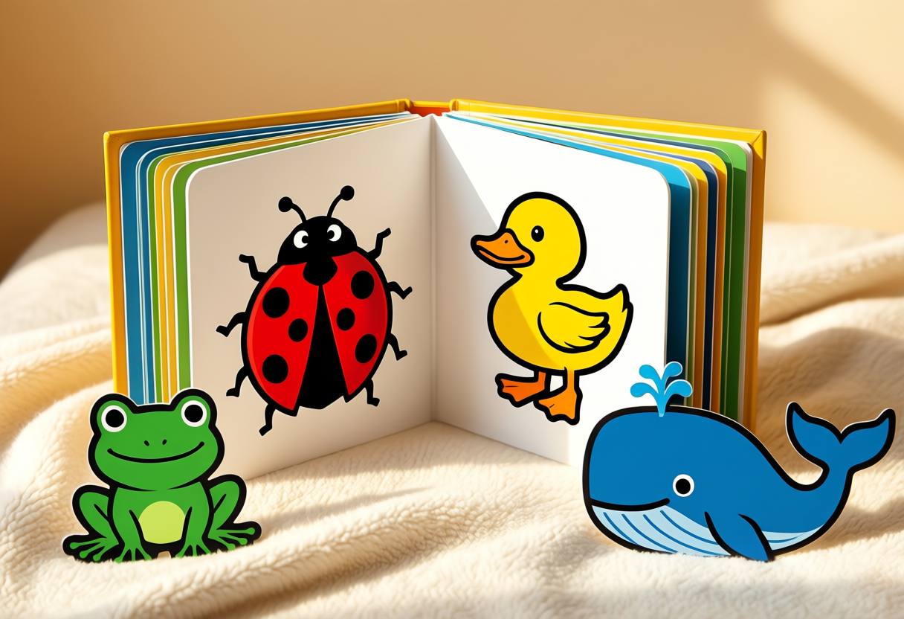
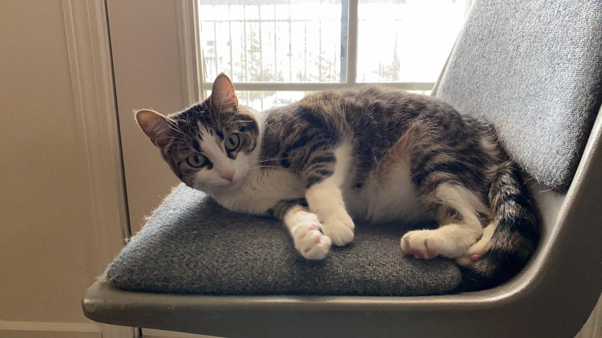

My wife wanted to start reading to Yusuf. He is three months old. The books we had on the shelf were lovely, and completely wrong for him — soft pastel illustrations, long sentences, pages of detail he cannot resolve yet. So I built him one that fits: The Black and White Zoo.

What a Three-Month-Old Can Actually See
This is the part that changed every design decision. A newborn's visual system is still wiring itself, and the thing it resolves best is high-contrast edges — pure black against pure white. Colour arrives slowly over the first year, and it arrives in order: red first, then yellow and green, with blue the last to turn up. Focal distance sits around 30 cm, roughly the gap between a parent's arms and their face.
So the book is not a book with pictures in it. It is a sequence of the boldest shapes I could draw, one per page, at the size his eyes can hold.
Two Chapters
The first chapter is pure black and white — animals whose real markings are already maximum contrast, so nothing had to be stylised into it. The second chapter introduces one colour per page, in the order his vision will pick them up, with heavy black outlines so the contrast still carries while the colour is new to him.

Narrated in My Own Voice
Every page has audio. The English is read in my own cloned voice, the same ElevenLabs voice I use for the Wireless 101 podcast episodes, and the Arabic uses the voice that narrates the Arabic lessons there. Yusuf will not understand a word of either for a long time, but he already knows the sound of his parents, and that is the part that matters at three months.
The narration names him directly — on the cover, and again at goodnight, in both languages. There is a field on the cover to change the name, for anyone else who wants to read it to their own baby.
How It Was Built
The whole thing is a single HTML file plus a folder of audio. No framework, no build step, no dependencies beyond two fonts — the same constraint I keep on everything else here, and the reason it will still open in ten years when he is old enough to find it embarrassing.
The artwork is hand-written SVG. Each animal is a handful of circles, ellipses and paths, which turned out to be the right medium for the job: the shapes a newborn can resolve are exactly the shapes that are simple to write by hand. A zebra is a white head, five black wedges and two eyes. Anything more detailed would have been wasted on him anyway.
The audio was generated with ElevenLabs. The one genuinely non-obvious lesson: text-to-speech falls apart on bare onomatopoeia. My first pass at the animal sounds pushed the expressiveness high and fed the model strings like Grrrrrr and Mooooooo, and the output came back warbling and garbled. Nonsense tokens give the model no linguistic context to work with. Wrapping each one in a short carrier sentence — "the cow says moo" — and pulling the style setting back down fixed it completely.
The illustrations on this page were generated locally, on the Mac Studio running my personal AI engine — Qwen-Image through draw-things-cli, no cloud service involved. The same models drew a second set of artwork for the book itself, one illustration per page, and there is a switch in the top bar to flip between them: drawn and illustrated. It opens on the drawn set on purpose — for a three-month-old the flat, hard-edged vector shapes are genuinely the better book. The illustrated set is for later, when he can see detail.
The Second Story: Susu
The second book is a true one. Susu the Cat is the story of our cat, told as Yusuf's story too, because she was here long before he was.

She was adopted in Oklahoma, during the PhD, in a winter a long way from anyone. For a while it was the two of them and a desk covered in papers. Then the books went into boxes and she rode across the country to California. Then Mama came, and the house grew fuller. Then Yusuf came, and Susu crept up to the crib and appointed herself to the job of watching him.
There are no dates anywhere in it. A baby has no use for years, and the shape of the story — then, and then, and then — is the part he can actually follow.
The page about mercy
One page steps outside the family story. It tells, in words a small child can hold, the hadith of the woman punished over a cat she had shut away without food or water. The full narration sits in the grown-up note on that page, with its sources, alongside the hadith told beside it — the man forgiven for drawing water from a well for a thirsty dog.
It belongs in this book rather than a book of lessons. The child hearing it has a cat in the house whose bowl he will one day be old enough to fill. Mercy to animals is easiest to teach where it is already happening, in the ordinary business of feeding the cat every single day.
Like the first book, it is bilingual with narration on every page, and carries both sets of artwork behind the same switch: Susu drawn in SVG from her photograph, and Susu as the local image models imagined her.
A Series, Not a Book
Two so far. The plan is to keep adding them as he grows, each matched to whatever he is working on at that point: shapes and faces next, then first words, then counting, then stories with a proper beginning and end. They stay here, alongside everything else I build, and this page grows with them.
If you have a baby around the same age, open it and put your own child's name on the cover. It is free, it works offline once loaded, and there is nothing in it to sign up for.